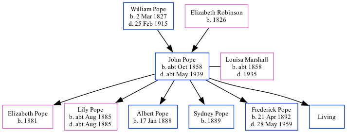

John Isaac Pope cOct 1858 - c1939
[ Home ] | [ Calendar ] | [ Surnames Index ] | [ Family History ]A bricklayer and the child of William Pope (a builder) and Elizabeth Robinson, John Pope, the second cousin three-times-removed on the father's side of <a href="I1.html">Nigel Horne</a>, was born in Folkestone, Kent, England <i>c.</i> Oct 1858<span class="citation">1,2,3,4</span>, was baptized there at Ss Mary & Eanswith Church on Oct 8, 1858 and married Louisa Marshall (with whom he had 6 children: <a href="I3183.html">Elizabeth A</a>, <a href="I3201.html">Lily Louisa</a>, <a href="I3185.html">Albert Edward</a>, <a href="I3184.html">Sydney J</a>, <a href="I3186.html">Frederick Ernest</a> and <a href="I3187.html">Leonard Ruskin Sextus</a>, along with 1 surviving child) in Turnham Green, London, England on Feb 16, 1879<span class="citation">5</span>.</p><p>Throughout his life, John lived in several places: on Mill Lane in Folkestone on Apr 7, 1861<span class="citation">1</span>; at Fancy Street in Folkestone on Apr 2, 1871<span class="citation">2</span>; on Binns Road, Chiswick, London on Apr 5, 1891<span class="citation">6</span>; and at Eastbury Grove, Chiswick, London on Mar 31, 1901<span class="citation">7</span> and on Apr 2, 1911<span class="citation">8</span>. <p>He died <i>c.</i> May 1939 in Brentford, London<span class="citation">4</span>.
Parents
- William was born on Mar 2, 1827
- Elizabeth Ann was born in 1826
Children
- Elizabeth A was born in 1881
- Lily Louisa was born c. Aug 1885
- Albert Edward was born on Jan 17, 1888
- Sydney J was born in 1889
- Frederick Ernest was born on Apr 21, 1892
Citations
- 1861 England, Wales & Scotland Census - Findmypast (was age 2 and the son of the head of the household)
- 1871 England, Wales & Scotland Census - Findmypast (was age 12 and the son of the head of the household)
- England & Wales births 1837-2006 - Findmypast
- England & Wales deaths 1837-2007 - Findmypast
- England & Wales Marriages 1837-2005 - Findmypast
- 1891 England, Wales & Scotland Census - Findmypast (was age 33 and the head of the household)
- 1901 England, Wales & Scotland Census - Findmypast (was age 43 and the head of the household)
- 1911 Census for England & Wales - Findmypast (was age 52 and the head of the household)
Media
England - BMD-D-1939-2-AZ-000753-048
1891 England, Wales & Scotland Census - GBC/1891/0007828391
1901 England, Wales & Scotland Census - GBC/1901/0007967925
Kent Baptisms - GBPRS-CANT-B-96150634
England & Wales births 1837-2006 - BMD/B/1858/4/MT/000462/038
England & Wales marriages 1837-2005 - BMD/M/1879/1/AZ/000169/126
1861 England, Wales & Scotland Census - GBC/1861/0003618431
England Births & Baptisms 1538-1975 - R_884242101
1911 Census for England & Wales - GBC/1911/RG14/06931/0519/1
Family Tree
Generated by Ged2Site. Last updated on Jul 20, 2025